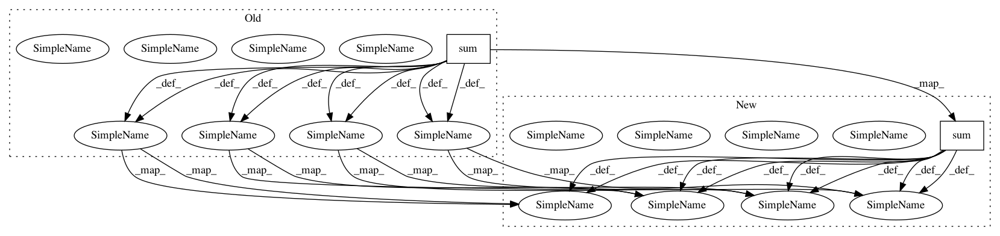

f951f5c69d6015e9f5aaacd5eeafb0abf94f2001,chainercv/links/model/ssd/multibox_coder.py,MultiboxCoder,decode,#MultiboxCoder#,187
Before Change
// softmax
mb_score = xp.exp(mb_conf)
mb_prob = mb_score / mb_score.sum(axis=1, keepdims=True)
bbox = []
label = []
prob = []
for l in range(mb_conf.shape[1] - 1):
bbox_l = mb_bbox
// the l-th class corresponds for the (l + 1)-th column.
prob_l = mb_prob[:, l + 1]
mask = prob_l >= score_thresh
bbox_l = bbox_l[mask]
prob_l = prob_l[mask]
if nms_thresh is not None:
indices = utils.non_maximum_suppression(
bbox_l, nms_thresh, prob_l)
bbox_l = bbox_l[indices]
prob_l = prob_l[indices]
bbox.append(bbox_l)
After Change
// softmax
mb_score = xp.exp(mb_conf)
mb_score /= mb_score.sum(axis=1, keepdims=True)
bbox = []
label = []
score = []
for l in range(mb_conf.shape[1] - 1):
bbox_l = mb_bbox
// the l-th class corresponds for the (l + 1)-th column.
score_l = mb_score[:, l + 1]
mask = score_l >= score_thresh
bbox_l = bbox_l[mask]
score_l = score_l[mask]
if nms_thresh is not None:
indices = utils.non_maximum_suppression(
bbox_l, nms_thresh, score_l)
bbox_l = bbox_l[indices]
score_l = score_l[indices]
bbox.append(bbox_l)
In pattern: SUPERPATTERN
Frequency: 4
Non-data size: 2
Instances
Project Name: chainer/chainercv
Commit Name: f951f5c69d6015e9f5aaacd5eeafb0abf94f2001
Time: 2018-04-25
Author: yuyuniitani@gmail.com
File Name: chainercv/links/model/ssd/multibox_coder.py
Class Name: MultiboxCoder
Method Name: decode
Project Name: NifTK/NiftyNet
Commit Name: ad66bf0a8faf1f230891faea92c31d8a3a0baa3f
Time: 2017-10-04
Author: wenqi.li@ucl.ac.uk
File Name: niftynet/engine/sampler_selective.py
Class Name:
Method Name: create_probability_weights
Project Name: chainer/chainercv
Commit Name: 3ce86ad7d4a71457489056f2955b3be75cb1366a
Time: 2018-10-12
Author: Hakuyume@users.noreply.github.com
File Name: chainercv/links/model/ssd/multibox_loss.py
Class Name:
Method Name: multibox_loss
Project Name: chainer/chainercv
Commit Name: a455f8512d8662fad9bb8244f5b47cbf19c17efe
Time: 2018-04-24
Author: yuyuniitani@gmail.com
File Name: chainercv/links/model/ssd/multibox_coder.py
Class Name: MultiboxCoder
Method Name: decode